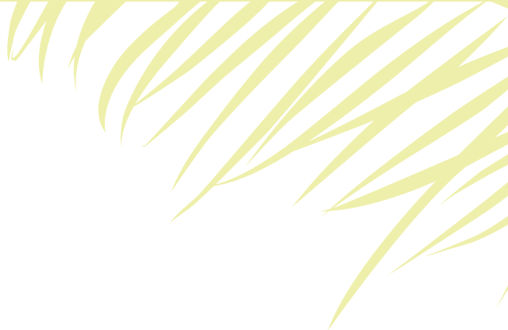

<!--
  Generated template for the SelfcheckinPage page.

  See http://ionicframework.com/docs/components/#navigation for more info on
  Ionic pages and navigation.
-->
<ion-header class="bordeBajo" >
    <ion-navbar>
      <button ion-button menuToggle>
        <ion-icon name="menu"></ion-icon>
      </button>
        <div>
          
        </div>
    </ion-navbar>
  </ion-header>

<ion-content>
  <div class="title_content1">
    <span class="txt_content1">Self Check-in</span>
  </div>
  <div class="content_form2">
      <div class="content_stay">
          
          <div class="contentinput_stay">
              <ion-label>Name</ion-label>
              <ion-input name="checkin"></ion-input>
          </div>
          <div class="contentinput_stay">
              <ion-label>Last Name</ion-label>
              <ion-input name="checkout"></ion-input>
          </div>
          <div class="contentinput_stay">
              <ion-label>Confirmation Code</ion-label>
              <ion-input name="number_adults" type="number"></ion-input>
          </div>
          <div class="boton_content applycode" (click)="onclickPageBienvenido()">
              <button ion-button full color="dark">apply code</button>
              <span class="desc1 txt2">CLICK APPLY TO CHECK-IN AND GET ROOM KEY</span>
          </div>
  </div>
</div>
<div class="menus_down clearfix">
    <span class="left txt2" (click)="onclickPagePop()">Back to menu</span>
    <span class="right txt2">Stay options</span>
</div>
</ion-content>
